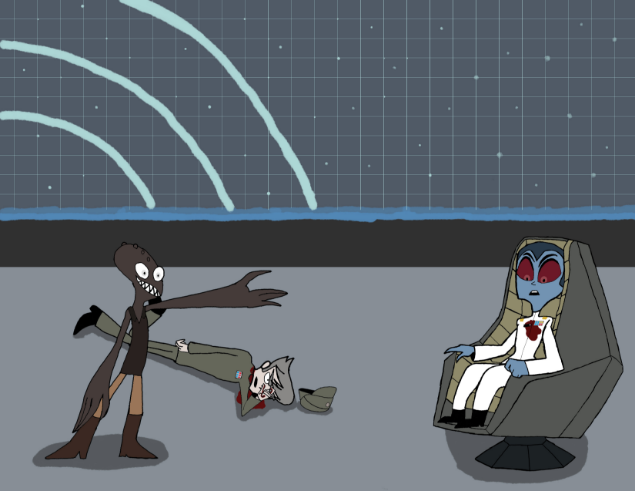
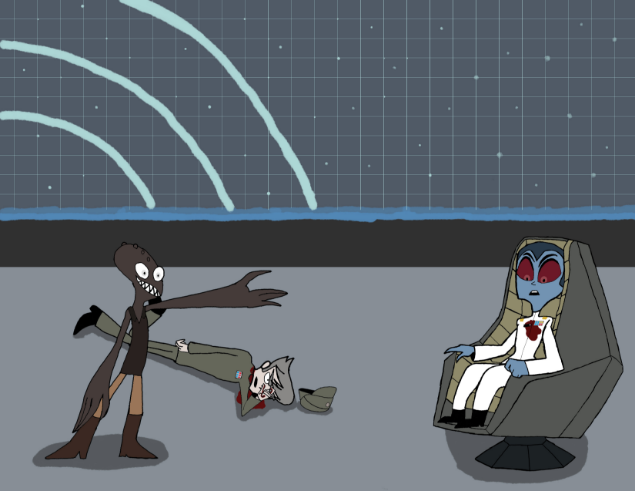
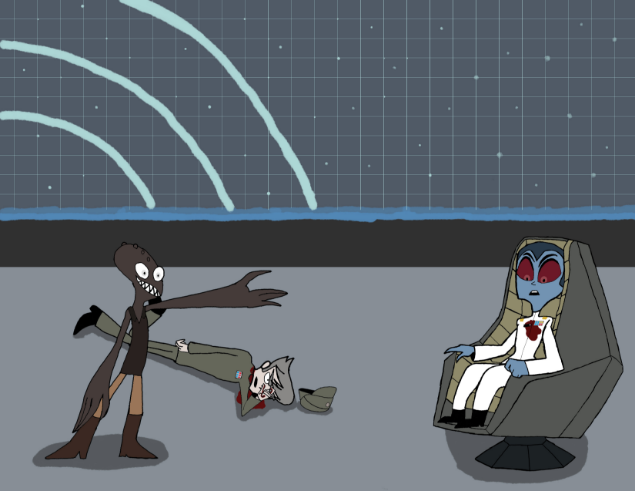

Highlights
Here are some of the works I have done that I am the most proud of. For more of my works check out the Art and Audio tabs.
 

Here are some of the works I have done that I am the most proud of. For more of my works check out the Art and Audio tabs.
